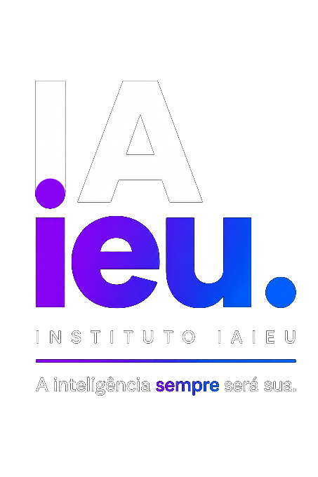

A inteligência
sempre será sua.
O Instituto IAieu existe para devolver às pessoas a confiança de aprender e de decidir. A IA é o meio. A autonomia é o resultado.
Nasce de quem
percorreu o caminho.
O Instituto IAieu não nasceu de um laboratório ou de uma universidade. Nasceu de mais de quarenta anos resolvendo problemas reais, em empresas, setores e países diferentes.
Sempre existiu um mesmo padrão: quanto mais complexo parecia o problema, maior era a necessidade de alguém capaz de transformá-lo em algo simples. A Inteligência Artificial apenas ampliou essa capacidade.
A IA chegou rápido. E muitos profissionais experientes sentiram, pela primeira vez, que o mundo passou por eles sem avisar. O Instituto IAieu nasceu exatamente para reduzir essa distância.
Quem já recomeçou
sabe ensinar a começar.
Começou operando máquina de telex num hotel cinco estrelas em São Paulo nos anos 80. Depois vieram a carga aérea numa companhia americana em Guarulhos, quinze anos de loja própria no Jardins, e o recomeço do zero nos Estados Unidos.
Recomeçar lá fora não foi pegar um cargo parecido. Foi descer, tirar o orgulho e entrar. Hoje coordena Manutenção e Infraestrutura no hub de carga de um dos maiores aeroportos dos Estados Unidos.
Cada setor era diferente. As culturas eram diferentes. Mas uma coisa se repetia: quando surge uma ferramenta nova que muda o jeito de trabalhar, o primeiro movimento da maioria é travar. Com a IA não está sendo diferente. É esse medo, legítimo, que o IAieu ajuda a transformar em clareza.
Toda nova tecnologia faz barulho antes de fazer sentido. Estamos aqui para transformar esse barulho em clareza.
A tela é sempre da pessoa. O mentor guia pela voz, a pessoa executa. Isso não é detalhe técnico, é filosofia.
A IA é o meio. A confiança é o produto. A autonomia é o resultado.
"O complexo não deveria ser complicado."
Aprender continua sendo humano.
Não vendemos tecnologia. Não prometemos atalhos. Não criamos dependência. Devolvemos às pessoas o que sempre foi delas: a confiança de aprender.